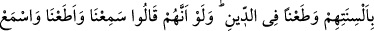
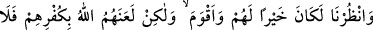
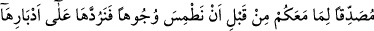
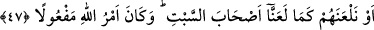

YAHÛDÎLER
44- Kendilerine Kitap’tan nasip verilenleri görmedin mi? Sapıklığı satın alıyorlar
ve sizin de yoldan çıkmanızı istiyorlar!
45- Allah düşmanlarınızı sizden daha iyi bilir. Gerçek bir dost olarak Allah yeter,
bir yardımcı olarak da Allah kâfidir.
46- Yahûdîlerden bir kısmı kelimeleri yerlerinden değiştirirler, dillerini eğerek,
bükerek ve dîne saldırarak (Peygambere karşı) “İşittik ve karşı geldik”, “dinle,
dinlemez olası”, “râinâ” derler. Eğer onlar “İşittik, itâat ettik, dinle ve bizi gözet”
deselerdi şüphesiz kendileri için daha hayırlı ve daha doğru olacaktı; fakat
küfürleri (gerçeği kabul etmemeleri) sebebiyle Allah onları lânetlemiştir. Artık pek
az inanırlar.
47- Ey kendilerine kitap verilenler! Biz, birtakım yüzleri silip dümdüz ederek
arkalarına çevirmeden, yâhut onları cumartesi adamları gibi lânetlemeden önce
(davranarak), size gelenleri doğrulamak üzere indirdiğimize (Kitab’a) îmân edin;
Allah’ın emri mutlaka yerine gelecektir.
“Kendilerine Kitap’tan”, kitâbın ilminden -ki bu kitâb Tevrât’tır- “nasip
verilenleri,” bunlardan maksat Yahûdi âlimleridir “görmedin mi?” Bu hitap, görme
kâbiliyeti olan bütün mü’minleredir. Vasfedilen kişilerin çirkin davranışları şöhret
bulduğundan gözle görülür hâle gelmiş, öyle ki âyette görülebilen şeyler arasına dâhil
edilmiştir. Âyetin mânâsı: “Bakmadın mı onlara? Çünkü onlar kendilerine bakıp
hallerine hayret etmene lâyıktırlar.” demektir. Âyet, münâfıkların reîsi Abdullah b.